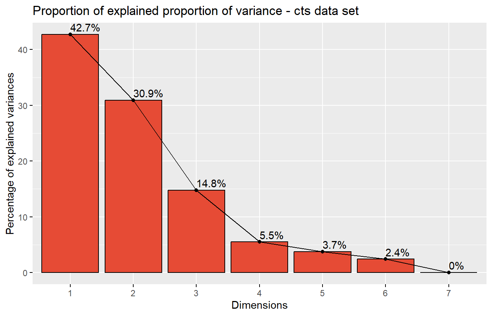

library(tidyverse)
library(paletteer)
library(scales)
library(RColorBrewer)
library(ggpubr)
library(VennDiagram)
library(circlize)
library(viridis)
library(png)
library(GGally)
library(cowplot)
library(openxlsx)
library(gridExtra)
library(gtable)
library(egg)
library(ggfortify)
library(FactoMineR)
library(factoextra)
library(gridGraphics)
library(corrplot)
library(plotly)
library(agricolae)
library(ComplexHeatmap)
library(DESeq2)
library(pcaExplorer)
library(EnhancedVolcano)Plotting Omics Data
Load R pakcages
1 Plotting Abundance of Features
1.1 Abundance of Representative Terms
1.2 Relative abundance
2 Principal Component Analysis
Way 1: prcomp & normal scatter plot
Way 2: rlogtransform & pcaexplorer
3 Hierarchical Clustering Analysis (Heatmap)
set.seed(123)
nr1 = 4; nr2 = 8; nr3 = 6; nr = nr1 + nr2 + nr3
nc1 = 6; nc2 = 8; nc3 = 10; nc = nc1 + nc2 + nc3
mat = cbind(rbind(matrix(rnorm(nr1*nc1, mean = 1, sd = 0.5), nr = nr1),
matrix(rnorm(nr2*nc1, mean = 0, sd = 0.5), nr = nr2),
matrix(rnorm(nr3*nc1, mean = 0, sd = 0.5), nr = nr3)),
rbind(matrix(rnorm(nr1*nc2, mean = 0, sd = 0.5), nr = nr1),
matrix(rnorm(nr2*nc2, mean = 1, sd = 0.5), nr = nr2),
matrix(rnorm(nr3*nc2, mean = 0, sd = 0.5), nr = nr3)),
rbind(matrix(rnorm(nr1*nc3, mean = 0.5, sd = 0.5), nr = nr1),
matrix(rnorm(nr2*nc3, mean = 0.5, sd = 0.5), nr = nr2),
matrix(rnorm(nr3*nc3, mean = 1, sd = 0.5), nr = nr3))
)
mat = mat[sample(nr, nr), sample(nc, nc)] # random shuffle rows and columns
rownames(mat) = paste0("row", seq_len(nr))
colnames(mat) = paste0("column", seq_len(nc))
library(circlize)
col_fun = colorRamp2(c(-2, 0, 2), c("green", "white", "red"))
col_fun(seq(-3, 3))[1] "#00FF00FF" "#00FF00FF" "#B1FF9AFF" "#FFFFFFFF" "#FF9E81FF" "#FF0000FF"
[7] "#FF0000FF"Heatmap(mat, name = "mat", col = col_fun)
4 Volcano Plot
Enhancedvolcano
5 Venn Diagram and Upset Plot
Venn: venndiagram
upset: complexheatmap
library(ComplexHeatmap)
set.seed(123)
lt = list(a = sample(letters, 5),
b = sample(letters, 10),
c = sample(letters, 15))
m1 = make_comb_mat(lt)
UpSet(m1)
6 Plotting Diversity Indices
ggpubr
7 Plotting Individual Gene Expression
ggpubr
8 Circos plot
9
10 Session info
sessionInfo()R version 4.3.0 (2023-04-21 ucrt)
Platform: x86_64-w64-mingw32/x64 (64-bit)
Running under: Windows 11 x64 (build 22621)
Matrix products: default
locale:
[1] LC_COLLATE=English_United States.utf8
[2] LC_CTYPE=English_United States.utf8
[3] LC_MONETARY=English_United States.utf8
[4] LC_NUMERIC=C
[5] LC_TIME=English_United States.utf8
time zone: Asia/Bangkok
tzcode source: internal
attached base packages:
[1] stats4 grid stats graphics grDevices utils datasets
[8] methods base
other attached packages:
[1] EnhancedVolcano_1.18.0 ggrepel_0.9.3
[3] pcaExplorer_2.26.1 DESeq2_1.40.1
[5] SummarizedExperiment_1.30.1 Biobase_2.60.0
[7] MatrixGenerics_1.12.0 matrixStats_0.63.0
[9] GenomicRanges_1.52.0 GenomeInfoDb_1.36.0
[11] IRanges_2.34.0 S4Vectors_0.38.1
[13] BiocGenerics_0.46.0 ComplexHeatmap_2.16.0
[15] agricolae_1.3-5 plotly_4.10.1
[17] corrplot_0.92 gridGraphics_0.5-1
[19] factoextra_1.0.7 FactoMineR_2.8
[21] ggfortify_0.4.16 egg_0.4.5
[23] gtable_0.3.3 gridExtra_2.3
[25] openxlsx_4.2.5.2 cowplot_1.1.1
[27] GGally_2.1.2 png_0.1-8
[29] viridis_0.6.3 viridisLite_0.4.2
[31] circlize_0.4.15 VennDiagram_1.7.3
[33] futile.logger_1.4.3 ggpubr_0.6.0
[35] RColorBrewer_1.1-3 scales_1.2.1
[37] paletteer_1.5.0 lubridate_1.9.2
[39] forcats_1.0.0 stringr_1.5.0
[41] dplyr_1.1.2 purrr_1.0.1
[43] readr_2.1.4 tidyr_1.3.0
[45] tibble_3.2.1 ggplot2_3.4.2
[47] tidyverse_2.0.0
loaded via a namespace (and not attached):
[1] bitops_1.0-7 httr_1.4.6 webshot_0.5.4
[4] doParallel_1.0.17 Rgraphviz_2.44.0 tools_4.3.0
[7] backports_1.4.1 utf8_1.2.3 R6_2.5.1
[10] DT_0.27 lazyeval_0.2.2 questionr_0.7.8
[13] GetoptLong_1.0.5 withr_2.5.0 prettyunits_1.1.1
[16] klaR_1.7-2 cli_3.6.1 formatR_1.14
[19] TSP_1.2-4 flashClust_1.01-2 topGO_2.52.0
[22] mvtnorm_1.1-3 genefilter_1.82.1 AnnotationForge_1.42.0
[25] labelled_2.11.0 limma_3.56.1 rstudioapi_0.14
[28] RSQLite_2.3.1 GOstats_2.66.0 generics_0.1.3
[31] shape_1.4.6 combinat_0.0-8 crosstalk_1.2.0
[34] car_3.1-2 zip_2.3.0 dendextend_1.17.1
[37] GO.db_3.17.0 leaps_3.1 Matrix_1.5-4
[40] fansi_1.0.4 abind_1.4-5 lifecycle_1.0.3
[43] scatterplot3d_0.3-44 yaml_2.3.7 carData_3.0-5
[46] BiocFileCache_2.8.0 blob_1.2.4 promises_1.2.0.1
[49] crayon_1.5.2 shinydashboard_0.7.2 miniUI_0.1.1.1
[52] lattice_0.21-8 haven_2.5.2 annotate_1.78.0
[55] KEGGREST_1.40.0 pillar_1.9.0 knitr_1.42
[58] rjson_0.2.21 estimability_1.4.1 codetools_0.2-19
[61] glue_1.6.2 data.table_1.14.8 vctrs_0.6.2
[64] assertthat_0.2.1 rematch2_2.1.2 cachem_1.0.8
[67] xfun_0.39 S4Arrays_1.0.1 mime_0.12
[70] survival_3.5-5 pheatmap_1.0.12 seriation_1.4.2
[73] iterators_1.0.14 ellipsis_0.3.2 Category_2.66.0
[76] nlme_3.1-162 bit64_4.0.5 threejs_0.3.3
[79] progress_1.2.2 filelock_1.0.2 AlgDesign_1.2.1
[82] colorspace_2.1-0 DBI_1.1.3 tidyselect_1.2.0
[85] emmeans_1.8.5 bit_4.0.5 compiler_4.3.0
[88] curl_5.0.0 graph_1.78.0 SparseM_1.81
[91] xml2_1.3.4 DelayedArray_0.26.2 RBGL_1.76.0
[94] NMF_0.26 multcompView_0.1-9 rappdirs_0.3.3
[97] digest_0.6.31 shinyBS_0.61.1 rmarkdown_2.21
[100] ca_0.71.1 XVector_0.40.0 htmltools_0.5.5
[103] pkgconfig_2.0.3 base64enc_0.1-3 highr_0.10
[106] dbplyr_2.3.2 fastmap_1.1.1 rlang_1.1.1
[109] GlobalOptions_0.1.2 htmlwidgets_1.6.2 shiny_1.7.4
[112] jsonlite_1.8.4 BiocParallel_1.34.1 RCurl_1.98-1.12
[115] magrittr_2.0.3 GenomeInfoDbData_1.2.10 munsell_0.5.0
[118] Rcpp_1.0.10 stringi_1.7.12 zlibbioc_1.46.0
[121] MASS_7.3-58.4 plyr_1.8.8 parallel_4.3.0
[124] Biostrings_2.68.0 splines_4.3.0 hms_1.1.3
[127] locfit_1.5-9.7 igraph_1.4.2 ggsignif_0.6.4
[130] rngtools_1.5.2 reshape2_1.4.4 biomaRt_2.56.0
[133] futile.options_1.0.1 XML_3.99-0.14 evaluate_0.21
[136] lambda.r_1.2.4 BiocManager_1.30.20 tzdb_0.3.0
[139] foreach_1.5.2 httpuv_1.6.10 heatmaply_1.4.2
[142] reshape_0.8.9 clue_0.3-64 gridBase_0.4-7
[145] broom_1.0.4 xtable_1.8-4 rstatix_0.7.2
[148] later_1.3.1 memoise_2.0.1 AnnotationDbi_1.62.1
[151] registry_0.5-1 cluster_2.1.4 timechange_0.2.0
[154] GSEABase_1.62.0 shinyAce_0.4.2